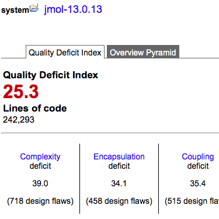
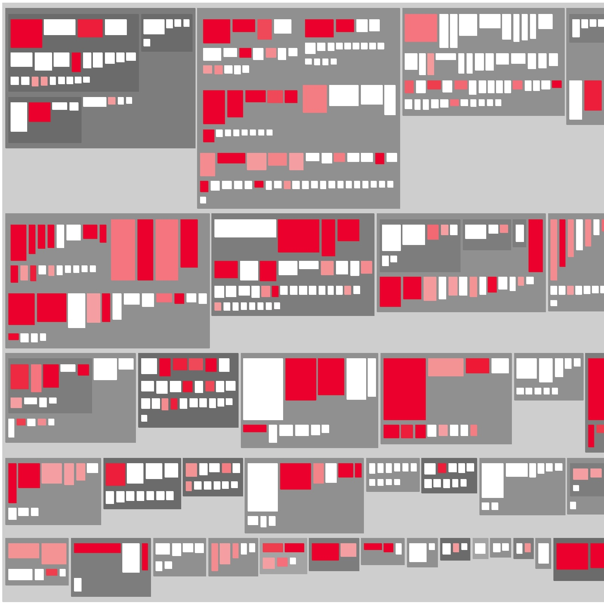
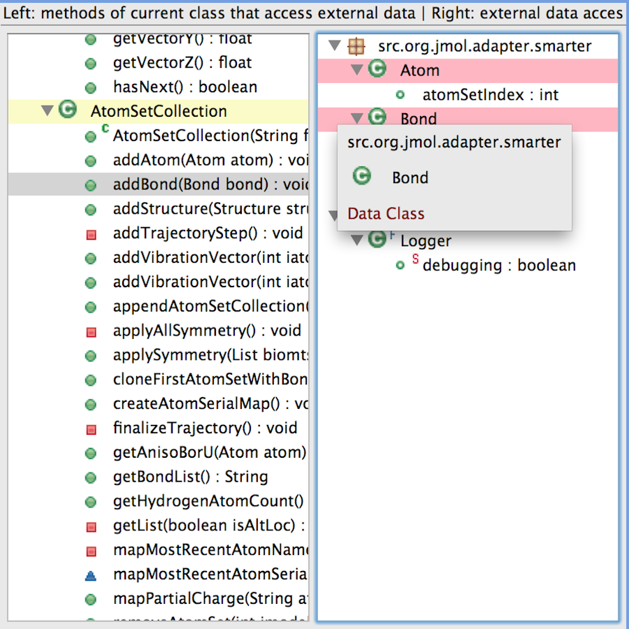
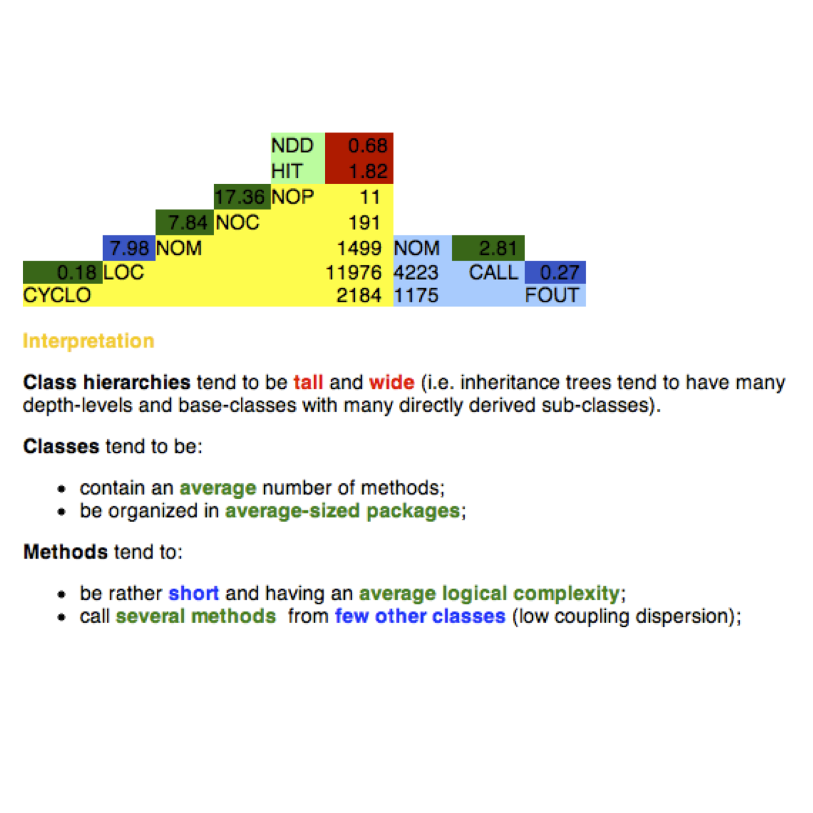

Automatic detection of major design flaws
inFusion
detects 24 design and code anti-patterns (smells) commonly encountered in software projects. Notable examples
include: God Class, Data Class, Code
Duplication, Data Clumps, Feature Envy, or Message Chains
(violations of
"Demeter's Law"). These anti-patterns cover all the essential quality
concerns: Complexity, Encapsulation, Coupling, Inheritance, and
Cohesion.
|
|
Visual exploration of design
inFusion
provides three
metrics-based interactive visualizations, which
allow a highly effective exploration of your system's design and its
problems. The Package Map shows
the distribution of classes in packages/folders; the Inheritance Map
reveals the class hierarchies; and the Class Map
presents the internal
structure of a class, as well as its interactions with other classes.
|
Smart insights and exploration tools
inFusion
features contextual insights and exploration tools that provide
invaluable hints during refactoring. By allowing a detailed exploration
of various metrics and relations, inFusion helps you track down the
particular cause and context of any given problem instance. This in
turn allows you to identify the best suited refactoring to remove the
problem and improve the quality of your code and design.
|
|
Metrics-based characterization
inFusion is able to
compute more than 50 software metrics, ranging from basic size and
complexity metrics (CYCLO, LOC, NOC, WOC) to the more advanced metrics,
characterizing various design aspects such as Coupling (OCDO, OCIO),
Cohesion (LCC, TCC),
or Inheritance (BOVR, DIT,
PNAS). These metrics are used as
indicators in the detection of design flaws, as well as to characterize and compare systems. |